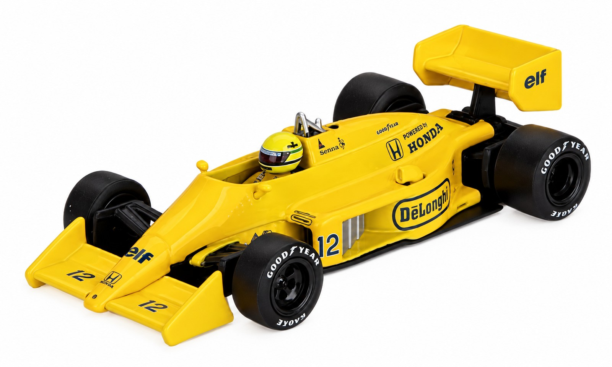

Coleção de estudo, nº 001
Cabe na palma da mão. Mas é um carro inteiro.
Em escala 1:64, um Lotus de Fórmula 1 tem o tamanho de um dedo. Aqui estão nove Mini GT numa estante de colecionador. Ninguém compra nada: é só para olhar de perto.
(trabalho de faculdade, não é loja)
Ver a estante
A estante
Clique num carrinho para abrir a ficha dele.
Pista e Senna
Garagem Kaido House
Os diferentões
De ferramentas a carrinhos
O taiwanês Glen Chou funda a TrueScale Miniatures (TSM), com sede em Hong Kong.
Sai o primeiro produto: réplicas em miniatura de ferramentas Snap-on, as "Garage Essentials".
A TSM entra no mundo dos carros em diecast com um Porsche 935 K3 em 1:18, o da Apple Computer em Le Mans 1980.
Nasce a Mini GT, a linha 1:64. Os primeiros modelos: Honda Civic Type R FK8, Nissan GT-R R35 e Lamborghini Huracán.
Linha principal, Motorsport, colaborações (Kaido House, Liberty Walk, Pandem, Rocket Bunny) e a Senna Collection. Corpo de metal, rodas de borracha e licenças oficiais desde o começo.
Cuidado de pesquisa: a Wikipedia data a fundação da TSM em 2006, mas o site da própria empresa fala em 2007. Fontes: Wikipedia e 1-64 Specialist.
Como ler uma embalagem
Cada cartela conta quase tudo sobre o carrinho antes de você abrir.
- Logo da marca. A cartela azul com o logo é a assinatura da linha principal.
- Janela. O carrinho fica preso à vista, sem precisar abrir.
- Ficha. Modelo, ano e, nas edições especiais, o piloto ou o preparador.
- Número de referência. É o que cada colecionador usa para achar o modelo certo.
- Idade. Miniatura de coleção: indicada para maiores de 14 anos.